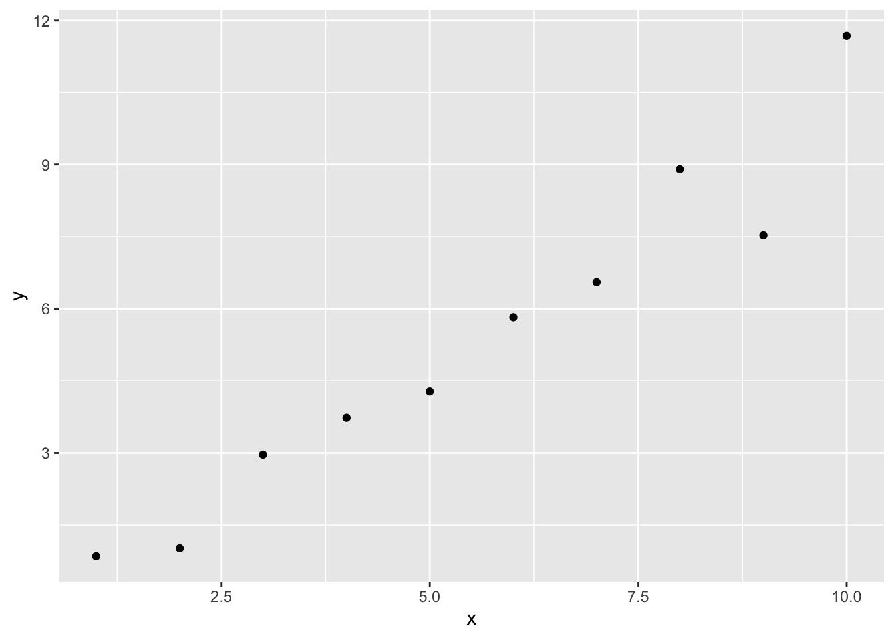
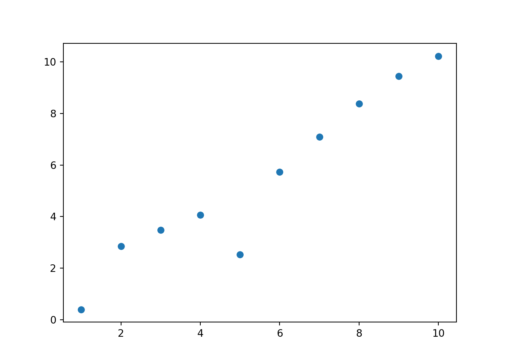
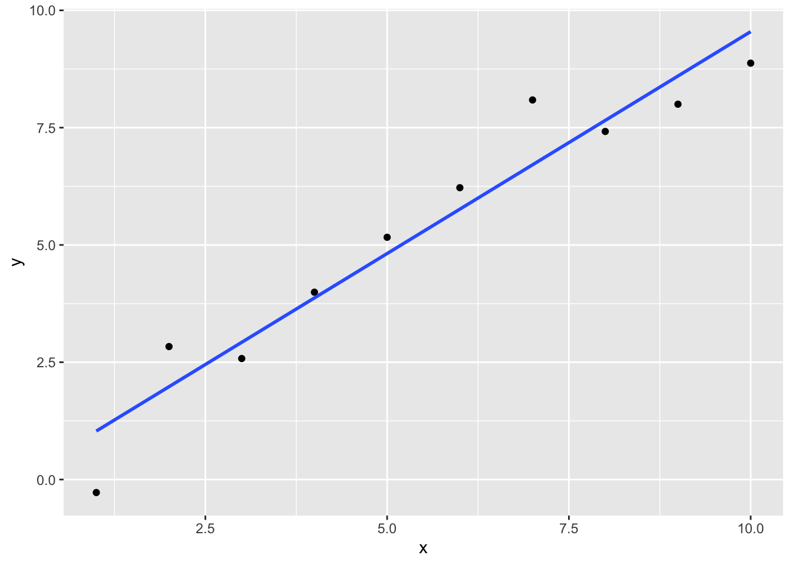
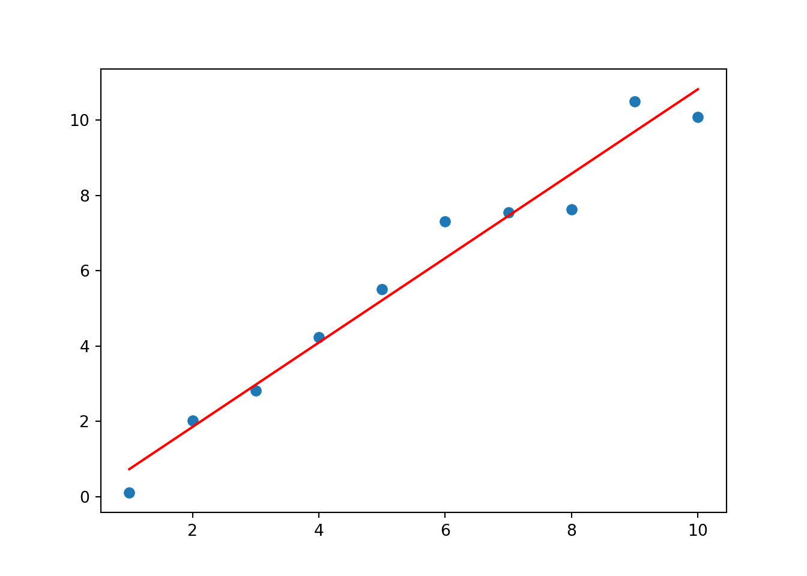
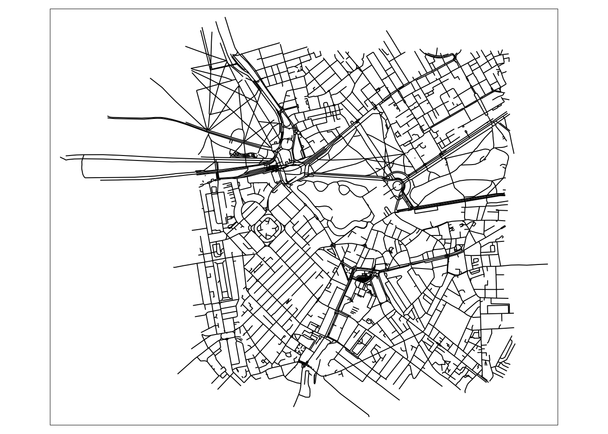
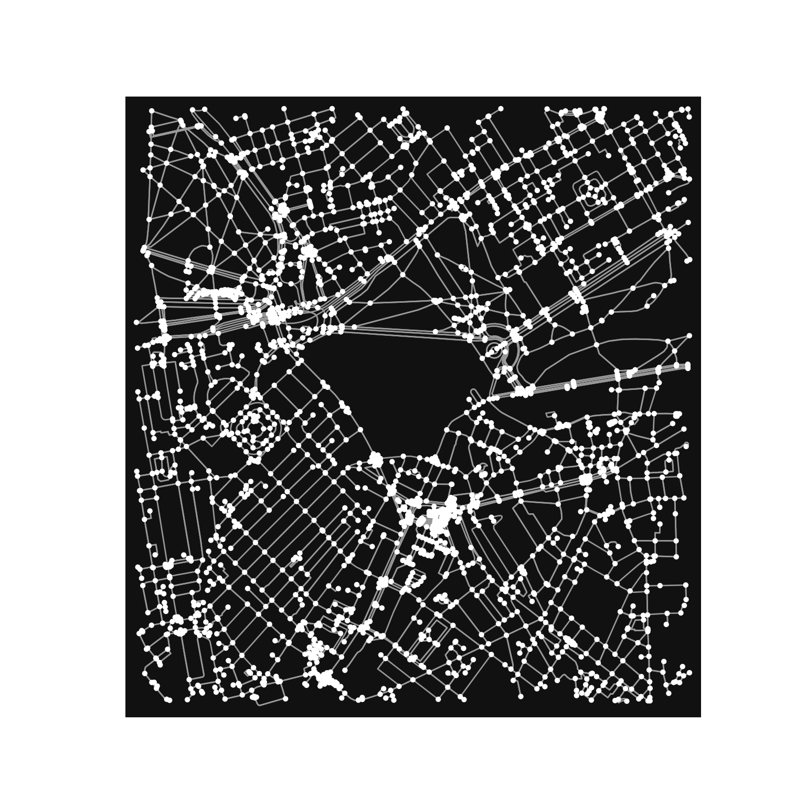

install.packages("reticulate")R_and_Python_bilingualism
1 Install packages
R libraries are stored and managed in a repository called CRAN. You can download R packages with the install.packages() function
You only need to install packages once, but you need to mount those packages with the library() function each time you open R.
library(reticulate)Python libraries are stored and managed in a few different libraries and their dependencies are not regulated as strictly as R libraries are in CRAN. It’s easier to publish a python package but it can also be more cumbersome for users because you need to manage dependencies yourself. You can download python packages using both R and Python code
py_install("pandas")+ '/Users/ty/opt/miniconda3/bin/conda' 'install' '--yes' '--prefix' '/Users/ty/opt/miniconda3/envs/earth-analytics-python' '-c' 'conda-forge' 'pandas'2 Load packages and change settings
options(java.parameters = "-Xmx5G")
library(r5r)Please make sure you have already allocated some memory to Java by running:
options(java.parameters = '-Xmx2G').
You should replace '2G' by the amount of memory you'll require. Currently, Java memory is set to -Xmx5Glibrary(sf)Linking to GEOS 3.10.2, GDAL 3.4.2, PROJ 8.2.1; sf_use_s2() is TRUElibrary(data.table)
library(ggplot2)
library(interp)
library(dplyr)
Attaching package: 'dplyr'The following objects are masked from 'package:data.table':
between, first, lastThe following objects are masked from 'package:stats':
filter, lagThe following objects are masked from 'package:base':
intersect, setdiff, setequal, unionlibrary(osmdata)Data (c) OpenStreetMap contributors, ODbL 1.0. https://www.openstreetmap.org/copyrightlibrary(ggthemes)
library(sf)
library(data.table)
library(ggplot2)
library(akima)
Attaching package: 'akima'The following objects are masked from 'package:interp':
aspline, bicubic, bicubic.grid, bilinear, bilinear.grid,
franke.data, franke.fn, interp, interp2xyz, interpplibrary(dplyr)
library(raster)Loading required package: sp
Attaching package: 'raster'The following object is masked from 'package:dplyr':
selectlibrary(osmdata)
library(mapview)
library(cowplot)
Attaching package: 'cowplot'The following object is masked from 'package:ggthemes':
theme_maplibrary(here)here() starts at /Users/ty/Documents/Github/pre-innovation-summit-traininglibrary(testthat)
Attaching package: 'testthat'The following object is masked from 'package:dplyr':
matchesimport sys
sys.argv.append(["--max-memory", "5G"])
import pandas as pd
import geopandas
import matplotlib.pyplot as plt
import numpy as np
import plotnine
import contextily as cx
import r5py
import seaborn as snsR and Python are two popular programming languages used for data analysis, statistics, and machine learning. Although they share some similarities, there are some fundamental differences between them. Here’s an example code snippet in R and Python to illustrate some of the differences:
R Code:
# Create a vector of numbers from 1 to 10
x <- 1:10
# Compute the mean of the vector
mean_x <- mean(x)
# Print the result
print(mean_x)[1] 5.5Python Code:
# Import the numpy library for numerical operations
import numpy as np
# Create a numpy array of numbers from 1 to 10
x = np.array([1, 2, 3, 4, 5, 6, 7, 8, 9, 10])
# Compute the mean of the array
mean_x = np.mean(x)
# Print the result
print(mean_x)5.5In this example, we can see that there are several differences between R and Python:
Syntax: R uses the assignment operator <- while Python uses the equals sign = for variable assignment.
Libraries: Python relies heavily on external libraries such as numpy, pandas, and matplotlib for data analysis, while R has built-in functions for many data analysis tasks.
Data types: R is designed to work with vectors and matrices, while Python uses lists and arrays. In the example above, we used the numpy library to create a numerical array in Python.
Function names: Function names in R and Python can differ significantly. In the example above, we used the mean() function in R and the np.mean() function in Python to calculate the mean of the vector/array.
These are just a few of the many differences between R and Python. Ultimately, the choice between the two languages will depend on your specific needs and preferences.
3 Load saved data
data("iris")
here()[1] "/Users/ty/Documents/Github/pre-innovation-summit-training"load(file=here("2_R_and_Py_bilingualism", "data", "iris_example_data.rdata"))
objects()[1] "iris" "mean_x" "x" 4 Save data
save(iris, file=here("2_R_and_Py_bilingualism", "data", "iris_example_data.rdata"))
write.csv(iris, file=here("2_R_and_Py_bilingualism", "data", "iris_example_data.csv"))5 functions
Both R and Python are powerful languages for writing functions that can take input, perform a specific task, and return output.
# Define a function that takes two arguments and returns their sum
sum_r <- function(a, b) {
return(a + b)
}
# Call the function with two arguments and print the result
result_r <- sum_r(3, 5)
print(result_r)[1] 8# Define a function that takes two arguments and returns their sum
def sum_py(a, b):
return a + b
# Call the function with two arguments and print the result
result_py = sum_py(3, 5)
print(result_py)8In both cases, we define a function that takes two arguments and returns their sum. In R, we use the function keyword to define a function, while in Python, we use the def keyword. The function body in R is enclosed in curly braces, while in Python it is indented.
There are a few differences in the syntax and functionality between the two approaches:
Function arguments: In R, function arguments are separated by commas, while in Python they are enclosed in parentheses. The syntax for specifying default arguments and variable-length argument lists can also differ between the two languages. Return statement: In R, we use the return keyword to specify the return value of a function, while in Python, we simply use the return statement. Function names: Function names in R and Python can differ significantly. In the example above, we used the sum_r() function in R and the sum_py() function in Python to calculate the sum of two numbers.
6 Data Plots
# Load the "ggplot2" package for plotting
library(ggplot2)
# Generate some sample data
x <- seq(1, 10, 1)
y <- x + rnorm(10)
# Create a scatter plot
ggplot(data.frame(x, y), aes(x = x, y = y)) +
geom_point()
# Load the "matplotlib" library
import matplotlib.pyplot as plt
# Generate some sample data
import numpy as np
x = np.arange(1, 11)
y = x + np.random.normal(0, 1, 10)
#clear last plot
plt.clf()
# Create a scatter plot
plt.scatter(x, y)
plt.show()
In both cases, we generate some sample data and create a scatter plot to visualize the relationship between the variables.
There are a few differences in the syntax and functionality between the two approaches:
Library and package names: In R, we use the ggplot2 package for plotting, while in Python, we use the matplotlib library. Data format: In R, we use a data frame to store the input data, while in Python, we use numpy arrays. Plotting functions: In R, we use the ggplot() function to create a new plot object, and then use the geom_point() function to create a scatter plot layer. In Python, we use the scatter() function from the matplotlib.pyplot module to create a scatter plot directly.
7 Linear regression
# Load the "ggplot2" package for plotting
library(ggplot2)
# Generate some sample data
x <- seq(1, 10, 1)
y <- x + rnorm(10)
# Perform linear regression
model_r <- lm(y ~ x)
# Print the model summary
summary(model_r)
Call:
lm(formula = y ~ x)
Residuals:
Min 1Q Median 3Q Max
-1.30996 -0.53687 -0.05674 0.42981 1.38168
Coefficients:
Estimate Std. Error t value Pr(>|t|)
(Intercept) 0.08701 0.57599 0.151 0.884
x 0.94593 0.09283 10.190 7.37e-06 ***
---
Signif. codes: 0 '***' 0.001 '**' 0.01 '*' 0.05 '.' 0.1 ' ' 1
Residual standard error: 0.8432 on 8 degrees of freedom
Multiple R-squared: 0.9285, Adjusted R-squared: 0.9195
F-statistic: 103.8 on 1 and 8 DF, p-value: 7.375e-06# Plot the data and regression line
ggplot(data.frame(x, y), aes(x = x, y = y)) +
geom_point() +
geom_smooth(method = "lm", se = FALSE)`geom_smooth()` using formula = 'y ~ x'
# Load the "matplotlib" and "scikit-learn" libraries
import matplotlib.pyplot as plt
from sklearn.linear_model import LinearRegression
# Generate some sample data
import numpy as np
x = np.arange(1, 11)
y = x + np.random.normal(0, 1, 10)
# Perform linear regression
model_py = LinearRegression().fit(x.reshape(-1, 1), y)
# Print the model coefficients
print("Coefficients: ", model_py.coef_)Coefficients: [1.12075338]print("Intercept: ", model_py.intercept_)
#clear last plotIntercept: -0.38835486629609406plt.clf()
# Plot the data and regression line
plt.scatter(x, y)
plt.plot(x, model_py.predict(x.reshape(-1, 1)), color='red')
plt.show()
In both cases, we generate some sample data with a linear relationship between x and y, and then perform a simple linear regression to estimate the slope and intercept of the line. We then plot the data and regression line to visualize the fit.
There are a few differences in the syntax and functionality between the two approaches:
Library and package names: In R, we use the lm() function from the base package to perform linear regression, while in Python, we use the LinearRegression() class from the scikit-learn library. Additionally, we use the ggplot2 package in R for plotting, while we use the matplotlib library in Python. Data format: In R, we can specify the dependent and independent variables in the formula used for regression. In Python, we need to reshape the input data to a two-dimensional array before fitting the model. Model summary: In R, we can use the summary() function to print a summary of the model, including the estimated coefficients, standard errors, and p-values. In Python, we need to print the coefficients and intercept separately.
8 Random Forest
# Load the "randomForest" package
library(randomForest)randomForest 4.7-1.1Type rfNews() to see new features/changes/bug fixes.
Attaching package: 'randomForest'The following object is masked from 'package:dplyr':
combineThe following object is masked from 'package:ggplot2':
margin# Load the "iris" dataset
data(iris)
# Split the data into training and testing sets
set.seed(123)
train_idx <- sample(1:nrow(iris), nrow(iris) * 0.7, replace = FALSE)
train_data <- iris[train_idx, ]
test_data <- iris[-train_idx, ]
# Build a random forest model
rf_model <- randomForest(Species ~ ., data = train_data, ntree = 500)
# Make predictions on the testing set
predictions <- predict(rf_model, test_data)
# Calculate accuracy of the model
accuracy <- sum(predictions == test_data$Species) / nrow(test_data)
print(paste("Accuracy:", accuracy))[1] "Accuracy: 0.977777777777778"# Load the "pandas", "numpy", and "sklearn" libraries
import pandas as pd
import numpy as np
from sklearn.ensemble import RandomForestClassifier
from sklearn.datasets import load_iris
from sklearn.model_selection import train_test_split
# Load the "iris" dataset
iris = load_iris()
# Split the data into training and testing sets
X_train, X_test, y_train, y_test = train_test_split(iris.data, iris.target, test_size=0.3, random_state=123)
# Build a random forest model
rf_model = RandomForestClassifier(n_estimators=500, random_state=123)
rf_model.fit(X_train, y_train)
# Make predictions on the testing setRandomForestClassifier(n_estimators=500, random_state=123)predictions = rf_model.predict(X_test)
# Calculate accuracy of the model
accuracy = sum(predictions == y_test) / len(y_test)
print("Accuracy:", accuracy)Accuracy: 0.9555555555555556In both cases, we load the iris dataset and split it into training and testing sets. We then build a random forest model using the training data and evaluate its accuracy on the testing data.
There are a few differences in the syntax and functionality between the two approaches:
Library and package names: In R, we use the randomForest package to build random forest models, while in Python, we use the RandomForestClassifier class from the sklearn.ensemble module. We also use different libraries for loading and manipulating data (pandas and numpy in Python, and built-in datasets in R). Model parameters: The syntax for setting model parameters is slightly different in R and Python. For example, in R, we specify the number of trees using the ntree parameter, while in Python, we use the n_estimators parameter. Data format: In R, we use a data frame to store the input data, while in Python, we use numpy arrays.
9 Retrieve data from an API
10 Basic streetmap from Open Street Map
# Load the "osmdata" package for mapping
library(osmdata)
library(tmap)
# Define the map location and zoom level
bbox <- c(left = -0.16, bottom = 51.49, right = -0.13, top = 51.51)
# Get the OpenStreetMap data
osm_data <- opq(bbox) %>%
add_osm_feature(key = "highway") %>%
osmdata_sf()
# Plot the map using tmap
tm_shape(osm_data$osm_lines) +
tm_lines()
# Load the "osmnx" package for mapping
import osmnx as ox
# Define the map location and zoom level
bbox = (51.49, -0.16, 51.51, -0.13)
# Get the OpenStreetMap data
osm_data = ox.graph_from_bbox(north=bbox[2], south=bbox[0], east=bbox[3], west=bbox[1], network_type='all')
# Plot the map using osmnx
ox.plot_graph(osm_data)(<Figure size 1600x1600 with 0 Axes>, <AxesSubplot:>)
In both cases, we define the map location and zoom level, retrieve the OpenStreetMap data using the specified bounding box, and plot the map.
The main differences between the two approaches are:
Package names and syntax: In R, we use the osmdata package and its syntax to download and process the OpenStreetMap data, while in Python, we use the osmnx package and its syntax. Mapping libraries: In R, we use the tmap package to create a static map of the OpenStreetMap data, while in Python, we use the built-in ox.plot_graph function from the osmnx package to plot the map.
11 CNN on Raster data
# Load the "keras" package for building the CNN
library(tensorflow)
library(keras)
# Load the "raster" package for working with raster data
library(raster)
# Load the "magrittr" package for pipe operator
library(magrittr)
# Load the data as a raster brick
raster_data <- brick("raster_data.tif")
# Split the data into training and testing sets
split_data <- sample(1:nlayers(raster_data), size = nlayers(raster_data)*0.8, replace = FALSE)
train_data <- raster_data[[split_data]]
test_data <- raster_data[[setdiff(1:nlayers(raster_data), split_data)]]
# Define the CNN model
model <- keras_model_sequential() %>%
layer_conv_2d(filters = 32, kernel_size = c(3, 3), activation = "relu", input_shape = c(ncol(train_data), nrow(train_data), ncell(train_data))) %>%
layer_max_pooling_2d(pool_size = c(2, 2)) %>%
layer_dropout(rate = 0.25) %>%
layer_flatten() %>%
layer_dense(units = 128, activation = "relu") %>%
layer_dropout(rate = 0.5) %>%
layer_dense(units = nlayers(train_data), activation = "softmax")
# Compile the model
model %>% compile(loss = "categorical_crossentropy", optimizer = "adam", metrics = "accuracy")
# Train the model
history <- model %>% fit(x = array(train_data), y = to_categorical(1:nlayers(train_data)), epochs = 10, validation_split = 0.2)
# Evaluate the model
model %>% evaluate(x = array(test_data), y = to_categorical(1:nlayers(test_data)))
# Plot the model accuracy over time
plot(history)